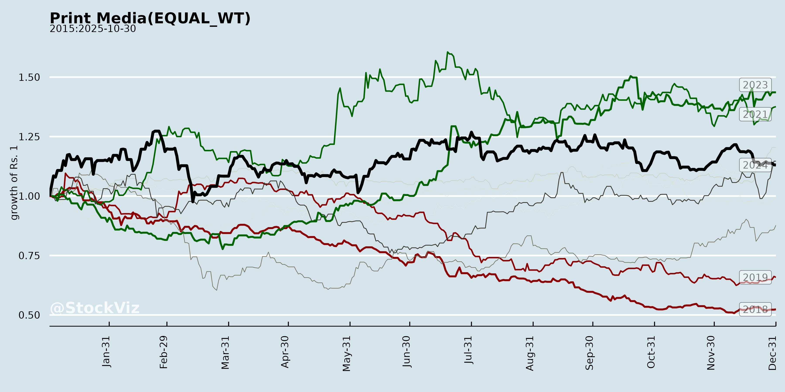
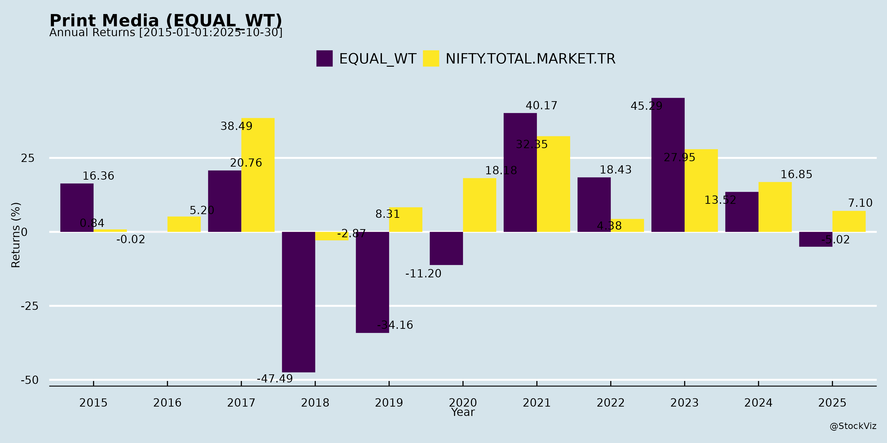
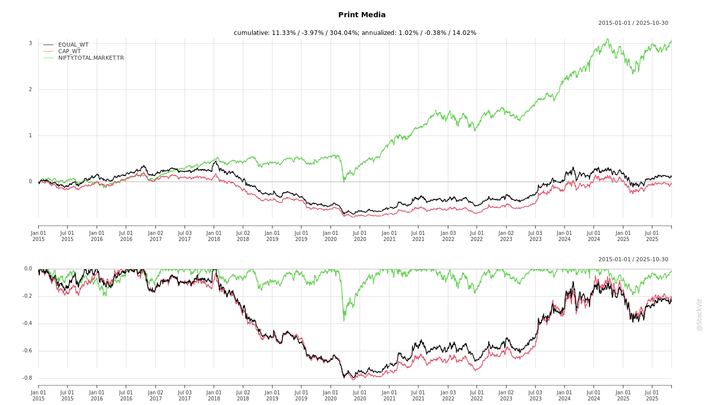
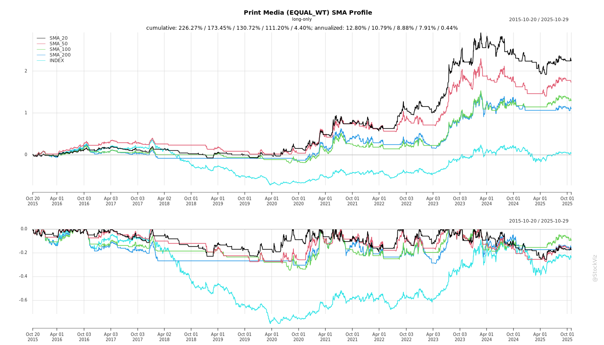
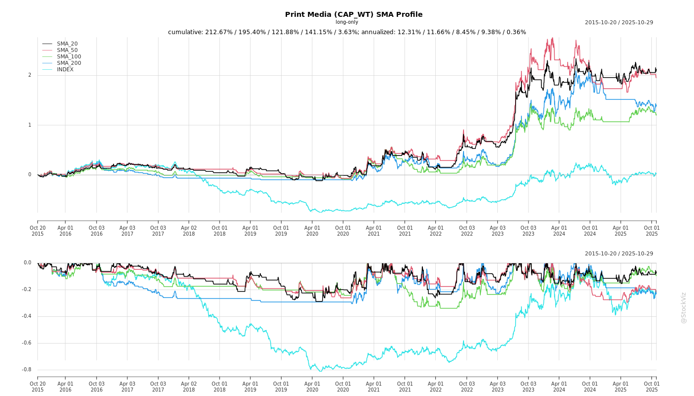

asof: 2025-11-30
Indian Print Media Sector Analysis (Based on Q2 FY26 Earnings Transcripts of D B Corp Ltd and HT Media/HMVL)
The transcripts from D B Corp Ltd (Dainik Bhaskar group, primarily Hindi print) and HT Media Group (Hindustan Times English + Hindustan Hindi) highlight a resilient yet challenged sector. Q2 FY26 showed broad-based print ad growth (9-12% YoY) driven by festive tailwinds and cost efficiencies, but moderated H1 growth (2-4% revenue). Print remains core (80-90% revenue), with radio/digital as growth bets amid stable newsprint (~Rs 47k/MT). Below is a structured analysis of headwinds, tailwinds, growth prospects, and key risks.
Tailwinds (Positive Supports)
Headwinds (Challenges)
Growth Prospects
Key Risks
Overall Summary
Indian print media delivered a “decent” Q2 (DB: 9-13% growth; HT: 4-10%), buoyed by festive/GST tailwinds and newsprint stability, but H1 softened (2-4% revenue) due to govt/FMCG weakness and radio/digital drags. Print core intact (leadership, margins up), with digital/radio as multi-year bets. Outlook mildly positive for H2 (festivals, expansions), targeting high single-digits ex-festive, but risks from inputs, payments, and category softness cap upside. Sector resilience hinges on cost control, digital inflection, and ad recovery—print not fading, but evolving hybrid model essential.
asof: 2025-12-01
Indian Print Media Sector Analysis (Q3 & 9M FY25 Insights from DB Corp, JPL, HMVL, HT Media)
The Indian print media sector showed resilience amid challenges in Q3 FY25 (ended Dec 31, 2024). Leaders like DB Corp reported record 9M revenue (₹18,544 Mn, +1% YoY) and PAT (₹3,187 Mn, +5% YoY), driven by print ad growth and cost efficiencies. JPL sustained strong revenue (consol Q3 ₹51,650 Mn), with print profitability. HMVL achieved a turnaround (9M PAT ₹3,238 Lakhs vs prior loss), aided by EBITDA positivity. HT Media (group level) remained loss-making (9M loss ₹3,716 Lakhs), reflecting digital/radio drags. Overall, print remains core (70-80% revenue) but flat YoY; digital/radio investments weigh on profitability. Key metrics: Ad revenue stable/soft post-elections; newsprint costs down 10-14% YoY; EBITDA margins improving (DB Corp print at 32%, +200 bps).
Tailwinds (Positive Drivers)
Headwinds (Challenges)
Growth Prospects
Key Risks
Summary Outlook: Moderate growth (5-10% topline FY25) anchored by print stability/digital upside, but profitability hinges on ad rebound/cost discipline. DB Corp outperforms as leader; others lag on diversification. Risks tilted toward execution (digital ROI) and macros; tailwinds from costs/digital provide buffers. Sector PE ~15-20x; watch Q4 ads/elections.
asof: 2025-11-30
Indian Print Media Sector Analysis (Based on Q2FY26 Results of Key Players: Jagran Prakashan Ltd (JPL), Sandesh Ltd, and Contextual Insights from HMVL/HT Media)
The analysis draws from unaudited Q2/H1FY26 financials and disclosures of JPL (diversified print leader) and Sandesh (Gujarati print-focused with investments), reflecting broader sector trends. Print remains core (70-80% revenue for most), but diversification into digital/radio/OOH is accelerating amid digital disruption.
Tailwinds (Positive Drivers)
Headwinds (Challenges)
Growth Prospects
Key Risks
| Risk Category | Description | Mitigation/Impact |
|---|---|---|
| Digital Disruption | Ad shift to OTT/social; circulation decline. | High (print 70%+ revenue); diversification ongoing but loss-making. |
| Ad Cyclicality | Economic slowdown, festive misses; investment volatility (Sandesh FVTPL swings). | Medium-High; resilient core but OPM volatility. |
| Operational | Radio cost pressures; newsprint fluctuations. | Medium; controls in place, but radio EBITDA negative. |
| Regulatory/Compliance | SEBI LODR filings, AGM e-voting; leadership rumors (HT clarification). | Low; strong governance. |
| Execution | Digital ROI delay; circulation recovery. | Medium; ₹1,000Cr+ cash buffers investments. |
Overall Summary: Indian print media shows resilience (ad growth, cash-rich) amid digital headwinds (circulation/radio losses). Tailwinds from efficiencies/regional moats support mid-single digit growth; prospects hinge on digital monetization (high potential, 20-30% user base expansion). Risks center on ad dependency/digital transition—sector likely 5-10% FY26 growth, with leaders like JPL (print+digital) outperforming pure-plays. Monitor H2 circulation/digital EBITDA for inflection.
asof: 2025-11-30
Indian Print Media Sector Analysis (Based on Q2 FY26 Earnings Transcripts of DB Corp Ltd and HT Media Group)
The analysis draws from the Q2 FY26 (ended Sep 30, 2025) conference calls of DB Corp Ltd (Dainik Bhaskar group) and HT Media Group (Hindustan Times/Hindustan), representing key Hindi/English print players. Both reported resilient print performance amid macro tailwinds, but face segment-specific challenges. Overall sector shows modest recovery post-Q1 softness, with print ads driving growth.
Tailwinds (Positive Factors)
Headwinds (Challenges)
Growth Prospects
Key Risks
| Risk Category | Details | Impact |
|---|---|---|
| Input Cost Volatility | Newsprint currency-linked; potential gradual rise (HT RISI forecast). | Margin erosion if INR weakens. |
| Ad Mix Dependency | Govt/FMCG ~20% share; election codes (Bihar Q3 negative for HT). | Revenue volatility; delayed payments strain cash. |
| Digital Monetization | High losses (HT OTT: -30cr); CAC sustainability unproven. | Capex drag; scaling without profitability. |
| Circulation Competition | Tier-2/3 stagnation despite efforts (DB: Bihar/Jharkhand weak; HT: pricing discounts). Metro revival (e.g., Mumbai Mirror) spillover uncertain. | Share loss to digital/competitors. |
| Radio/Regulatory | Industry duress; impairments (HT); TRAI radio-in-phones delayed. | Segment value erosion. |
| Macro/Event-Driven | Post-festive slowdown; real estate stamp duty unchanged (DB). | Q3 weakness if pent-up demand fades. |
Summary
Indian print media exhibits resilience with cautious optimism: Print core stable (ad +10-12% YoY, margins up on low newsprint), aided by macro tailwinds (GST/festives) and digital traction. However, headwinds from govt/FMCG weakness and radio losses cap upside. Growth prospects hinge on sectoral recovery (auto/real estate) and digital/radio scale-up, targeting high single-digits. Key risks center on ad volatility, costs, and monetization delays—watch Q3 for festive/Bihar election impact. Sector PE attractiveness may improve with profitability focus, but investor caution persists (e.g., HT MF absence). Overall: Stable FY26 with 5-10% revenue growth potential, assuming stable inputs.
asof: 2025-12-02
Based on the provided documents (AGM notices, voting results, financial statements, and MD&A from key players like DB Corp Ltd (Dainik Bhaskar), Jagran Prakashan Ltd (Dainik Jagran), Sandesh Ltd, Hindustan Media Ventures Ltd, and HT Media Ltd), here’s a summary analysis of the Indian Print Media sector. Insights are drawn from FY 2024-25 financials (e.g., flat/declining revenues, profit drops due to lower investment gains), sector overviews (e.g., EY reports), and MD&A discussions (e.g., Sandesh’s detailed outlook).
Overall Outlook: Print media resilient but transitioning to hybrid/digital models. Regional players like those analyzed show stability (debt-free, dividends), but growth hinges on digital acceleration amid modest 3-4% CAGR. High promoter control (e.g., 75-99% voting) ensures strategic continuity, but sector risks from digital shift persist.
asof: 2025-11-30
Analysis of Indian Print Media (Using Jagran Prakashan Limited Q2FY26 Results as Proxy)
Jagran Prakashan Limited (JPL), a leading player in Indian print media with flagship Dainik Jagran, provides insights into the sector’s dynamics. Standalone print business shows resilience, but consolidated results highlight diversification challenges amid digital/radio headwinds. Below is a structured summary:
Tailwinds (Positive Drivers)
Headwinds (Challenges)
Growth Prospects
Key Risks
Overall Summary: Indian print media shows resilience in core Hindi print (10%+ growth), buoyed by ad strength and brand moats, but faces secular headwinds from digital/radio (consolidated ~4% growth). Prospects hinge on digital monetization and diversification; risks center on subsidiary losses and ad volatility. JPL’s standalone strength suggests sector stability, with FY26 upside if radio stabilizes. Investors should monitor Q3 ads and digital margins.
Copyright © 2023 SAS Data Analytics Pvt. Ltd. All rights reserved.